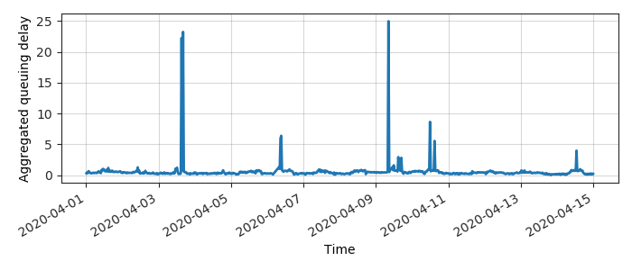
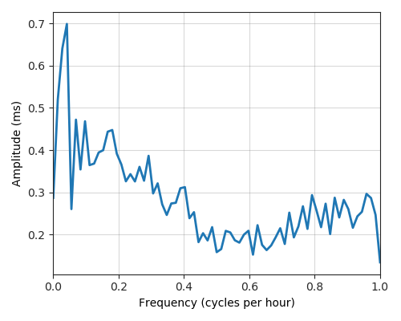
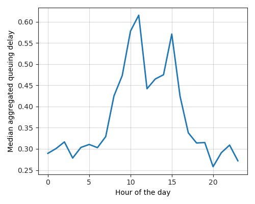

---
layout: default
title: Last-mile delay survey / 2020-04-01 / AS24691
---
AS24691, TOGOTEL-AS TogoTelecom, Togo, TG
Summary
- Daily last-mile fluctuations: low
- Number of probes: 3
- APNIC eyeball rank: 735
- Daily fluctuations: True
- Main frequency: 0.0417
- Average peak-to-peak amplitude: 0.70ms
Aggregated last-mile queuing delay

Periodogram

24H profile

Probes' last-mile RTT